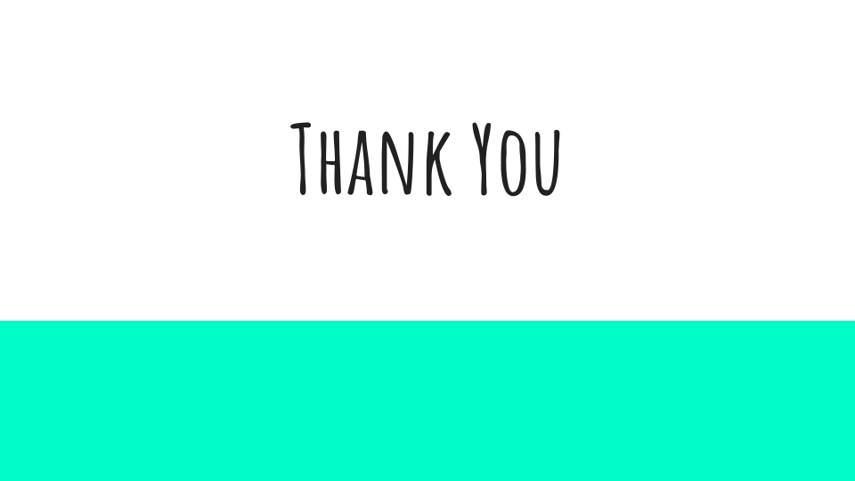

4 New Chapter
4.1 Learning Objectives
Every chapter also needs Learning Objectives.
4.2 Libraries
For this chapter, we’ll need the following packages attached:
*Remember to add any additional packages you need to your course’s own docker image.
4.3 Topic of Section
You can write all your text in sections like this, using ## to indicate a new header. you can use additional pound symbols to create lower levels of headers.
See here for additional general information about how you can format text within R Markdown files. In addition, see here for more in depth and advanced options.
4.3.1 Subtopic
Here’s a subheading (using three pound symbols) and some text in this subsection!
4.4 Code examples
You can demonstrate code like this:
output_dir <- file.path("resources", "code_output")
if (!dir.exists(output_dir)) {
dir.create(output_dir)
}And make plots too:
hist_plot <- hist(iris$Sepal.Length)
You can also save these plots to file:
$breaks
[1] 4.0 4.5 5.0 5.5 6.0 6.5 7.0 7.5 8.0
$counts
[1] 5 27 27 30 31 18 6 6
$density
[1] 0.06666667 0.36000000 0.36000000 0.40000000 0.41333333 0.24000000 0.08000000
[8] 0.08000000
$mids
[1] 4.25 4.75 5.25 5.75 6.25 6.75 7.25 7.75
$xname
[1] "iris$Sepal.Length"
$equidist
[1] TRUE
attr(,"class")
[1] "histogram"dev.off()png
2 4.5 Image example
How to include a Google slide. It’s simplest to use the ottrpal package:

But if you have the slide or some other image locally downloaded you can also use HTML like this:

4.6 Video examples
You may also want to embed videos in your course. If alternatively, you just want to include a link you can do so like this:
Check out this link to a video using markdown syntax.
4.6.1 Using knitr
To embed videos in your course, you can use knitr::include_url() like this: Note that you should use echo=FALSE in the code chunk because we don’t want the code part of this to show up. If you are unfamiliar with how R Markdown code chunks work, read this.
4.6.2 Using HTML
4.6.3 Using knitr
4.6.4 Using HTML
4.7 Website Examples
Yet again you can use a link to a website like so:
You might want to have users open a website in a new tab by default, especially if they need to reference both the course and a resource at once.
Or, you can embed some websites.
4.7.1 Using knitr
This works:
4.7.2 Using HTML
4.8 Stylized boxes
Occasionally, you might find it useful to emphasize a particular piece of information. To help you do so, we have provided css code and images (no need for you to worry about that!) to create the following stylized boxes.
You can use these boxes in your course with either of two options: using HTML code or Pandoc syntax.
4.8.1 Using rmarkdown container syntax
The rmarkdown package allows for a different syntax to be converted to the HTML that you just saw and also allows for conversion to LaTeX. See the Bookdown documentation for more information. Note that Bookdown uses Pandoc.
::: {.notice}
Note using rmarkdown syntax.
:::Note using rmarkdown syntax.
As an example you might do something like this:
Please click on the subsection headers in the left hand navigation bar (e.g., 2.1, 4.3) a second time to expand the table of contents and enable the scroll_highlight feature (see more)
4.8.2 Using HTML
To add a warning box like the following use:
Followed by the text you want inside
This will create the following:
Followed by the text you want inside
Here is a <div class = "warning"> box:
Note text
Here is a <div class = "github"> box:
GitHub text
Here is a <div class = "dictionary"> box:
dictionary text
Here is a <div class = "reflection"> box:
reflection text
Here is a <div class = "wip"> box:
Work in Progress text